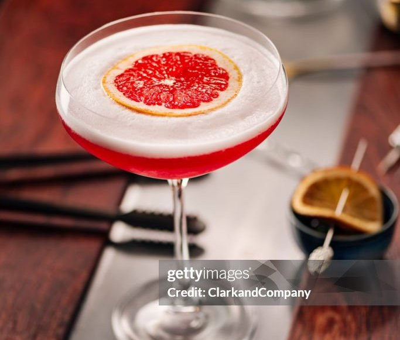

MOJİTO
Highball bardağa 4 elma dilim lime,1 dolu bar kaşığı esmer şeker/beyaz şeker eklenip havanla (çok bokunu çıkarmadan limeları katletmeden) ezilir. 10-12 yaprak nane elde patlatılıp eklenir. Bardağı %75 dolduracak şekilde kırık buz eklenir. 5 cl captain morgan beyaz rom eklenip kaşıkla 10 15 saniye karıştırılır,soda eklenir. Düzgün bir kaç kelle nane ile süslenir.
NEGRONİ

70lik bira bardağına(mixing glass :) ) sırasıyka 2.5 cl cin,campari ve rosso vermut(eşit ölçüler)ve bol buz eklenip kaşık yardımıyla 30 saniye karıştırılır büyük küp buzlu kristal viski bardağına süzülür. Uzun ve nispeten dikdörtgen portakal kabuğuyla pıst yapılır,kabuk bardağın kenarına falan sürülür ve bardağın içine atılır.
WHİSKEY SOUR

Shakera 2 cl şeker şurubu aynı ölçüde limon ve portakal suyu 5 cl jack daniels ve 4 damla foamer eklenip bol buzla çalkalanır. Bol buzlu büyük viski bardağına çift süzülür,kuru portakal dilimi ile süslenir.
OLD FASHİONED
70lik bardağa 2 cl şeker şurubu,4 damla angostura bitter,5 cl Jim beam ve bol buz eklenip kaşıkla karıştırılır,küp buzlu kristal bardağa süzülür. Dikdörtgen portakal kabuğu pıst falan.
ESPRESSO MARTİNİ

Shakera 4 cl smirnoff votka 2.5 cl kahve likörü(kahlua),1 shot ya da 1 fincan espresso. Bol buzla iyi çalkalanıp ayaklı kristal bardağa süzülür. 3 kahve çekirdeği ile süslenir.
MARGARİTA
Shakera 2 cl şeker şurubu,3 cl lime suyu,2.5 cl portakal likörü,4 cl olmeca tekila eklenip bolbuzla çalkanır tuz gerdanlı ayaklı kristal bardağa çift süzülür,elma dilim lime ile süslenir.
AMARETTO SOUR
Shakera 3 cl dissaronno(badem likörü),3 cl Jim beam,2 cl şeker şurubu,limon ve portakal suyu ve 4 damla foamer eklenip bol buzla çalkanır martini kadehine süzülür.Süsüne karar veremedim zaten bardak da yanlış tercih.Ama çok güzel.
CAMPARİ SOUR

Shakera 2.5cl şeker şurubu, limon suyu ve portakal suyu,5 cl Campari,4 damla foamer eklenip bol buzla çalkanır yine yanlış bir tercih olan martini kadehine süzülür,portakal dilimi ile sülenir.